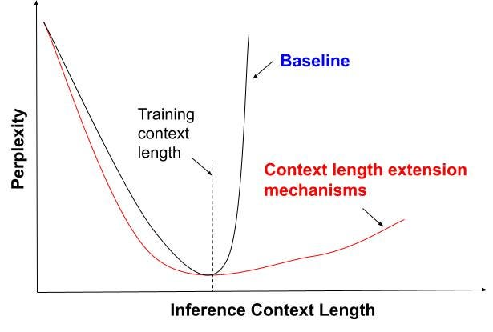
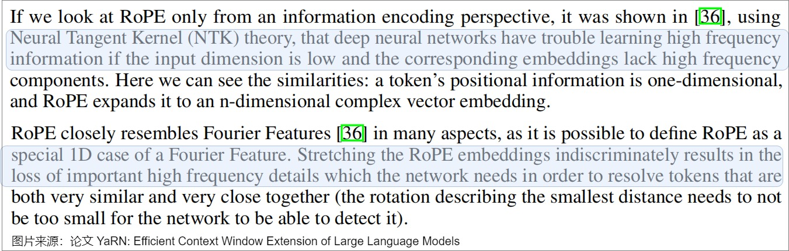
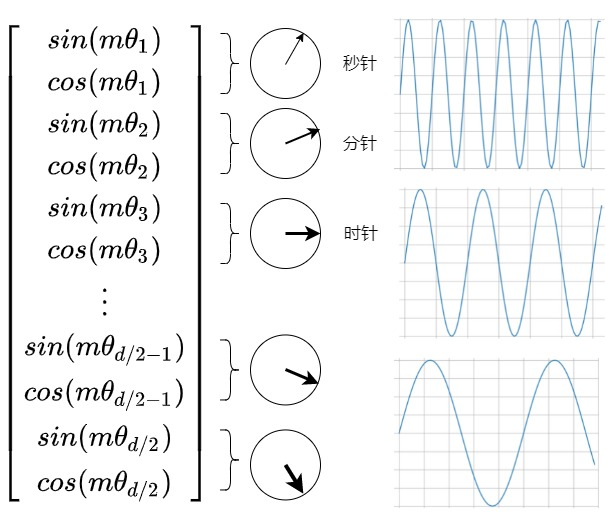
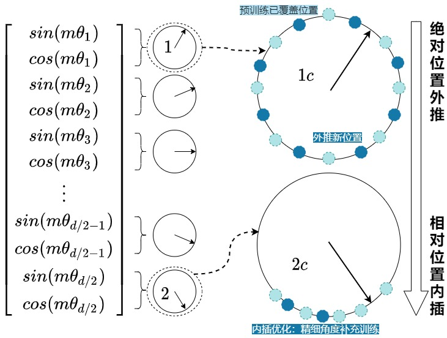

Transformer位置编码(3)——从RoPE到YaRN外推
第一部分：问题的根源——RoPE 的“上下文天花板”
1.1 引言
建议先去阅读一下这篇大佬的文章：探秘Transformer系列之（23）— 长度外推 - 罗西的思考 - 博客园，里面讲解的很清晰！本篇意在用更少的篇幅尝试讲清楚YaRN 这一解决方案！
大型语言模型 (LLM) 的能力在很大程度上与其能够处理的上下文窗口大小相关。扩展上下文窗口对于解锁更复杂的应用至关重要，例如处理长文档摘要、执行“大海捞针”式的知识库问答 (RAG)，或在大型代码库中进行辅助编程 。然而，大多数开源的 LLM（例如 Llama 2 系列）在设计上都受限于其预训练阶段设定的上下文窗口（例如 4096 个 token），这构成了它们能力的“天花板”。

1.2 RoPE 回顾（可参考笔者上期内容：Transformer位置编码(2)——RoPE）
为了理解 YaRN，必须首先回顾它所要改进的基础：旋转位置编码 (RoPE) 。
RoPE 的核心思想是，注意力分数应该只取决于 token 之间的相对距离 。它通过对查询 ($ q )和键( k )向量应用一个与绝对位置 m $相关的旋转矩阵 $ R_m $ 来实现这一点 。
给定位置 $ m $ 处的 $ q $ 向量和位置 $ n $ 处的 $ k $ 向量，它们的位置编码版本 $ q_m $ 和 $ k_n $ 之间的内积 $ q_m^T k_n $ 最终只依赖于相对位置 $ (m-n) $ 。这种旋转是通过复数乘法或等效的 2x2 旋转矩阵实现的，其旋转角度 θm, d 由绝对位置 $ m $ 和维度索引 $ d $ 共同决定：
θm, d = m ⋅ θd = m ⋅ b − 2d/D 其中 $ b $ 是一个固定的基数（例如 10000），$ D $ 是特征维度。

1.3 解构 RoPE 的“外推失败” (Extrapolation Failure)
RoPE 的优雅设计在预训练窗口（例如 $ L=4096 $）内表现出色，但一旦序列长度 $ m $ 超过 $ L $，模型的性能（以困惑度 PPL 为衡量标准）会立即出现“悬崖式下跌” (cliff-like drop)。
这种失败的根源在于其位置编码方法的“有限外推能力”。这被视为一个“预测阶段的分布外 (Out-Of-Distribution, OOD) 问题”。研究发现，即使使用了 RoPE 这样的相对编码，Transformer 模型仍然会“过拟合” (overfit) 它们在训练期间看到的特定位置嵌入。此外，训练动态也加剧了这一问题：处于序列后部（rear positions）的位置嵌入在训练中被更新的频率远低于前部位置，导致它们在更长上下文中的泛化能力很差。

1.4 深度洞察：为什么“相对”的 RoPE 会“绝对”地失败？
RoPE 的失败常常被误解。尽管其目标是相对的，但其实现是绝对的（依赖于绝对位置 $ m $）。失败的核心原因在于低频维度在外推时产生了 OOD 旋转角。
这个失败过程可以分解如下：
- 频率差异： RoPE 的不同维度 $ d $ 具有不同的旋转“速度” $ _d $。
- 高频维度 (High-frequency, $ d $ 较小)： $ d $ 很大，旋转很快。在训练窗口内，这些维度可能已经旋转了数十甚至上百圈（即 $ {m,d} $）。当 $ m > 4095 $ 时，例如 $ m=4097 $，其角度只是“再多转一点”，模型在训练中已经见过无数次相似的角度值（例如 $ _{m,d} $），因此可以很好地处理外推。
- 低频维度 (Low-frequency, $ d $ 较大)： $ _d $ 极小，旋转极慢。
- 失败点： 对于某些用于编码长距离关系的低频维度，其在 $ m=4095 $ 时的总旋转角度可能仍小于 $ 2$ 。当模型在推理时遇到 $ m = 8000 $ 的 token 时，这个维度的旋转角首次超过了 $ 2$。
- OOD 灾难： 模型在预训练期间从未见过该维度产生大于 $ 2$ 的旋转角。它无法将这个 OOD 信号解释为有效的位置信息。这导致了不稳定的注意力分数，进而导致注意力机制的崩溃，特别是在评估长距离依赖关系时。
因此，所有上下文扩展技术的核心挑战是：如何处理这些在 $ m > L $ 时“失控”的低频维度。
第二部分：上下文扩展的演进之路 (The Lineage)
首先，参考从ROPE到Yarn, 一条通用公式速通长文本大模型中的位置编码和论文YaRN: Efficient Context Window Extension of Large Language Models中的内容，Yarn的作者认为编码函数是一个关于输入向量x、位置m 和θ 的函数，无论是ROPE还是它的所有变种，本质上都可以被以下公式所统一： f′W(xm, m, θd) = fW(xm, g(m), h(θd)) 其中：
- $ f′ $ 是调整后的查询（query）和键（key）向量。
- $ f $ 是原始的查询和键向量计算函数。
- $ x_m $ 是输入序列中位置m的嵌入向量。
- $ m $ 是序列中的位置索引。
- $ θ_d $ 是RoPE中的旋转角度参数，即频率参数。
- $ g(m) $ 是一个可调函数，用于根据比例因子$ s 调整位置索引 m $，描述位置的变换逻辑。
- $ h(θ_d) 是一个可调函数，用于根据比例因子 s $调整RoPE的旋转角度参数 $ θ_d $ ，描述频率的变换逻辑。
2.1 解决方案一：位置插值 (PI)——“挤压”策略
第一个被广泛采用的解决方案是位置插值 (Position Interpolation, PI)。
核心思想：PI 的思想非常简单：不要进行外推 (Extrapolation)，转而进行内插 (Interpolation)。
机理：它将需要处理的更长序列 $ L’ $（例如 32k）的 位置索引 $ m’ $（范围 $ [0, L’-1] $）线性缩放（或称“挤压”）到模型预训练的原始范围 $ L $（例如 4k）之内（范围 $ [0, L-1] $）。
数学公式： 定义缩放因子 $ s = L’ / L $。PI 修改了 RoPE 的位置函数 $ g(m) $：
g(m) = m/s
h(θd) = θd
原始的旋转角度 $ _{m,d} = m d $ 被替换为 $ {m,d}’ = (m/s) _d $。

应用： LLaMA-2-7B-32K 和 Meta 自己的 Llama 2 Long 都采用了 PI 作为其上下文扩展策略。
优势： PI 完美地解决了 OOD 问题。通过 PI，模型永远不会遇到超出其训练范围 $ [0, L-1] $ 的位置索引。此外，它非常高效：仅需少量微调（例如 1000 步）即可将 LLaMA 的上下文从 4k 扩展到 32k ，这远比从头预训练高效得多。
2.2 PI 的代价：高频信息的损失
然而，PI 并非没有代价。它的主要缺陷在于它统一缩放了所有维度。PI 牺牲了位置的“分辨率”来换取“范围”。

这个代价的产生过程如下：
- PI 将 $ m $ 替换为 $ m/s $。
- 考虑两个相邻的 token（例如位置 $ m $ 和 $ m+1 $）。在 PI 处理后，它们在位置空间中的“有效距离”从 $ 1 $ 变成了 $ (m+1)/s - m/s = 1/s $。
- 当 $ s $ 很大时（例如 $ s=16 $，即 4k -> 64k），这个有效距离 $ 1/s $ 变得非常小。
- RoPE 的高频维度（High-frequency dimensions）存在的意义恰恰是区分近距离 token 的相对顺序。
- 当 PI 将它们的有效距离压缩到 $ 1/s $ 时，这些高频维度产生的旋转角度差异也变得微乎其微，导致模型难以区分它们的顺序。
- 这就是“高频信息损失” (loss of high frequency) 或“近距离 token 混淆” (confusion about positional order of close-by tokens) 的根本原因。
- 后果：经过 PI 微调的模型，虽然获得了长上下文能力，但在短上下文任务上的表现却会下降。

2.3 解决方案二：“NTK-aware” 缩放——“非线性”修复
“NTK-aware” 缩放的提出正是为了解决 PI 丢失高频信息的问题。该方法受到了神经切线核 (Neural Tangent Kernel, NTK) 理论的启发，NTK 理论表明高频分量对于深度神经网络的学习至关重要。

核心思想：与其缩放位置 $ m $，不如缩放 RoPE 的基频 (base) $ b $ 。
机理：这种缩放是非线性的。它旨在“分散插值压力”：对低频维度进行大幅度缩放（类似于 PI），但对高频维度只进行轻微缩放，从而保留它们。
数学公式： g(m) = m
h(θd) = b′ − 2d/D (即修改 θd)
$$ \text{其中新基数 } b' = b \cdot s^{\frac{|D|}{|D| - 2}} $$
优势：在不进行任何微调的情况下（这种用法被称为 “Dynamic NTK”），“NTK-aware” 缩放在长序列上的 PPL 表现优于 PI。它成功地保留了高频信息。
拟合曲线：NTK-aware Interpolation方法其实是将外推的程度定义成一个与组别 $ d $ 有关的函数 $ γ(d) $ 。
- $ d = 0 $ 为最高频分量，我们希望完全外推，此时 $ γ(d)= 1.0 $ 。
- $ d = D/2 -1 $ 为最低频分量，我们希望完全内插，此时 $ γ(d) = L/L’ $ 。
这个函数可以用一条以分组 $ d $ 为变量的经过点$ (0,1) 与点 (𝐷/2−1,L/L′) 的单调递减的曲线。具体曲线形式有多种，论文中使用指数函数来拟合这条曲线，得到 γ(d)=s^，s = L’/L $。
我们也可以从时钟的角度来理解。RoPE 的行为就像一个时钟，每一个 $ $ 值就控制着一块圆盘的转动速度，一共有 $ d/2 $ 个圆盘。

我们假设前三个转盘是秒针，分针和时针。12小时时钟基本上是一个维度为 3、底数为 60 的 RoPE。秒针，分针和时针是不同的频率在旋转。（频率从高到低）每秒钟，分针转动 1/60 分钟，每分钟，时针转动 1/60。现在RoPE时钟一天最大能表达：60 * 60 * 12=43200s。如果希望时钟表达的时间变长，假如想表达4天，则需要将时钟减慢4倍，那么有如下两种方法：
- PI：将每秒，分钟，时钟的频率平等的缩小4倍（周期变长），可以实现这个目标。不幸的是，现在很难区分每一秒，因为现在秒针几乎每秒都不会移动。因此，如果有人给你两个不同的时间，仅相差一秒，你将无法从远处区分它们。
- NTK-Aware RoPE：我们应该对频率高的秒钟，不做缩放，而会将分钟减慢 1.5 倍，将小时减慢 2 倍，即可以在一小时内容纳 90 分钟，在半天内容纳 24 小时。现在时钟可以表达：60 * (60 * 1.5)(2 12)=129600.0。我们只关注整体的时间：那么不需要精确测量时针，所以与秒相比，将小时缩放得更多是至关重要的。我们不想失去秒针的精度，但我们可以承受分针甚至时针的精度损失。
2.4 “NTK-aware” 的新困境：微调失败
“NTK-aware” 似乎是一个更好的解决方案，但它在实践中暴露了一个致命缺陷：尽管它在零调优（zero-shot）长下文上表现不错，但在微调后的性能却劣于 PI 。
其失败的深层原因在于 “NTK-aware” 不是一个纯粹的“插值”方案：
- PI 保证了所有 $ m/s $ 都在 $ [0, L-1] $ 的分布内 (in-distribution)。这为微调提供了一个稳定（尽管分辨率低）的目标。
- “NTK-aware” 通过改变基频 $ b $ 来扭曲整个频率空间。
- 这种扭曲虽然保留了高频，但也导致某些维度的旋转角度被外推到了“越界” (out-of-bound) 值。即实际上，在RoPE的训练过程中存在一些足够低频的分量，这些低频分量对应的波长 $ λ_d $ 长到即使是训练过程中最长的序列，也没有办法让这些分量经过一个完整周期。对于这些分量，我们显然不应该对他们进行任何的外推。否则可能会引入一些从未见过的旋转角度，这些旋转角度对应的正余弦值在训练过程中模型也从未见过，会导致模型的效果下降。
- 因此，模型在微调时，面对的是一个不稳定的位置编码目标（部分维度在分布内，部分维度在分布外）。这比 PI 提供的完全在分布内的模糊目标更难学习。
此时，研究人员面临一个挑战：如何设计一种方法，既能像 “NTK-aware” 一样保留高频信息，又能像 PI 一样保证所有维度都在分布内（纯插值），以便于稳定微调？
这就是 YaRN 登场的契机。
第三部分：YaRN 的核心机制 (I) —— “NTK-by-parts” 精细化插值
YaRN (Yet another RoPE extensioN method) 认识到，PI 和 NTK-aware 的失败在于它们试图用“一刀切”的方案处理所有 RoPE 维度。
3.1 YaRN 的核心洞察：分而治之 (By-Parts)
YaRN 的革命性思想是：根本不应该插值高频维度，而应该只插值低频维度 。
- 机理分析：
- 高频（短波长）维度： 它们用于编码局部相对位置（例如相邻词的顺序）。插值它们会破坏这种能力（这是 PI 的错误）。
- 低频（长波长）维度： 它们用于编码全局相对位置（例如段落间的关系）。外推它们会产生 OOD 错误（这是 RoPE 的原始错误）。
- YaRN 的策略：
- 对高频维度：保留原始 $ _d $。
- 对低频维度：应用 PI ($ _d / s $)。
- 在两者之间：平滑过渡。
3.2 数学解构 (1)：Ramp Function ($ $)
为了实现这种“分而治之”的策略，“NTK-by-parts”（YaRN 使用的插值方法）引入了一个“斜坡函数” (ramp function) $ (r) $ 。
关键变量：该函数不直接依赖于维度 $ d $，而是依赖于一个物理意义更强的比率 $ r(d) $ ：
r(d) = L/λd 其中 $ L $ 是原始上下文长度（例如 4096），$ _d $ 是第 $ d $ 维的波长。$ r(d) $ 的直观含义是：“在原始上下文窗口中，第 d 维旋转了多少圈”斜坡函数 $ (r) $ 定义：该函数引入了两个超参数 $ $ 和 $ $ 来定义插值的边界。对于 Llama 模型，实验发现 $ $ 和 $ $ 是很好的取值。
$$ \gamma(r) = \begin{cases} 0, & r < \alpha \quad (\text{例如 } r < 1), \\[6pt] 1, & r > \beta \quad (\text{例如 } r > 32), \\[6pt] \dfrac{r - \alpha}{\beta - \alpha}, & \text{其他情况.} \end{cases} $$
3.3 数学解构 (2)：$ h(_d) $ 混合函数
YaRN (NTK-by-parts) 的频率修改函数 $ h(_d) $ 被定义为 PI 频率 ($ _d / s )和原始RoPE频率( _d $) 的加权平均，权重由 $ (r) $ 控制：
$$ h(\theta_d) = \left( 1 - \gamma(r) \right) \frac{\theta_d}{s} + \gamma(r) \theta_d $$
3.4 深度洞察：三种模式的“三重奏”
“NTK-by-parts” 是一个极其精妙的设计，它完美地合成了 PI 和 NTK-aware 的优点。我们可以通过分析 $ (r) $ 的三个区间来理解其工作原理：
- 模式 1：低频维度 (Low Frequencies)
- 条件： $ r < $ (例如 $ r < 1 $)。这意味着波长 $ _d > L $。这些是在原始上下文中“一圈都没转完”的维度，它们是 OOD 错误的主要来源。
- 计算： $ (r) = 0 $。
- 公式： $ h(_d) = (1-0) (_d / s) + 0 _d = _d / s $。
- 结论： 这等同于纯粹的 PI 。YaRN 只对这些最容易产生 OOD 错误的低频维度进行插值，完美解决了外推问题 。
- 模式 2：高频维度 (High Frequencies)
- 条件： $ r > $ (例如 $ r > 32 $)。这意味着波长 $ _d $ 极短，在原始上下文中“转了超过 32 圈”。这些维度对局部相对位置至关重要。
- 计算： $ (r) = 1 $。
- 公式： $ h(_d) = (1-1) (_d / s) + 1 _d = _d $。
- 结论： 频率保持不变 10。YaRN 完全保留了这些对区分近距离 token 至关重要的高频维度，完美解决了 PI 导致的“近距离混淆”问题 。
- 模式 3：过渡维度 (Transition)
- 条件： $ r $。
- 计算： $ 0 < (r) < 1 $。
- 公式： $ h(_d) $ 是 $ _d/s $ 和 $ _d $ 之间的平滑线性插值。这确保了从“插值”到“保留”的过渡是平滑的，避免了在频率空间中产生突兀的“断崖”。
综上所述，“NTK-by-parts” 保留了 PI 的“插值”稳定性（用于低频），又获得了 NTK-aware 的“高频保留”优势（用于高频），同时规避了两者的所有缺点。

第四部分：YaRN 的核心机制 (II) —— 注意力缩放与温度调节
“NTK-by-parts” 解决了位置编码问题，但这只完成了 YaRN 拼图的一半 。
4.1 新问题：长上下文中的注意力熵 (Entropy)
问题： 当上下文被“压缩”（即使是智能压缩）时，token 在 RoPE 嵌入空间中的有效“距离”被拉近了 。
后果： $ q k $ 的点积（即 logits）的方差会增大，导致 $ $ 函数的输入值变得非常大。
“过度锐化” (Overly “sharp”)：当 $ $ 函数的输入值差异巨大时，其输出会“坍缩”到一个单一的最大值上。
致命缺陷： 这种过度锐化的注意力分布意味着模型“过度自信”，只关注极少数几个 token，而失去了对全局上下文的关注能力。这对于需要整合长距离信息的任务是致命的。
4.2 YaRN 的解决方案：引入温度 $ t $
解决 $ $ 过度锐化的标准方法是使用“温度” (Temperature) $ t $ 。
- 数学公式： YaRN 修改了标准的注意力计算公式：
- 标准注意力： $ () $
- YaRN 注意力： $ () $
- 效果： 当 $ t > 1 $ 时，它会“压平” logits，使 $ $ 的输出更平滑（熵更高），从而恢复模型对全局上下文的敏感性，降低困惑度。
4.3 经验公式：$ t $ 与 $ s $ 的关系
温度 $ t $ 不应是一个固定值，它必须随着上下文缩放因子 $ s $ 的增加而增加。通过在 Llama 模型上拟合困惑度 PPL 与缩放因子 $ s $ 的曲线，YaRN 的作者们得出了以下经验公式：
$$ \frac{1}{\sqrt{t}} = 0.1 \ln(s) + 1 $$ 注： 这一公式中的 $ 0.1 $ 是一个可调参数；例如，后续的 DeepSeek-V2 模型将其修改为 $ 0.0707 $ ，但这表明 $ 1/ $ 与 $ (s) $ 之间的对数关系是关键。
4.4 “零开销”实现技巧 (The “Length Scaling” Trick)
挑战： 直接修改 $ $ 公式（如上所示）意味着需要重写底层的注意力核（Kernel）。这将导致无法使用 Flash Attention 2 等高度优化的库，从而牺牲性能。
YaRN 采用了一种极其巧妙的数学等价来实现零开销：
数学等价：
$$ \frac{q^T k}{t} = \frac{(q / \sqrt{t})^T (k / \sqrt{t})}{1} $$
实现： 我们不需要修改 $ $。我们只需要在 $ q $ 和 $ k $ 向量进入点积运算之前，将它们分别乘以一个常数因子 $ $ 。
优化： $ $ 是一个常数（由 $ s $ 决定）。RoPE 嵌入 $ R_m $ 通常也是预先计算并缓存的。
“烘焙” (Bake-in)： YaRN 将这个 $ $ 缩放因子直接“烘焙”到预计算的 RoPE 旋转嵌入中。
结果： 这种“注意力缩放”是通过修改预计算的位置嵌入缓存来实现的。底层的注意力代码（如 Flash Attention）保持不变。因此，该技术在训练和推理期间完全没有（Zero）额外开销。
4.5 YaRN 完整定义
YaRN 是一个“组合拳”，它由两个核心组件构成： YaRN = “NTK-by-parts” 插值 + 注意力温度缩放 。
“NTK-by-parts” 修正了位置编码的频率，而“注意力缩放”修正了注意力分数的动态范围。
第五部分：实证分析——YaRN 的性能表现
YaRN 的设计在理论上是完备的，其在基准测试中的表现也证实了这一点。
5.1 关键基准 (1)：长序列语言建模 (PPL)
- 任务： 评估模型在超长文本（如 Proof-pile ）上的困惑度 (PPL)。PPL 越低，模型对文本的理解越流畅。
- 模型：
Yarn-Llama-2-7b-64k和Yarn-Llama-2-13b-128k。
- 结果： YaRN 模型的 PPL 曲线在整个 128k 上下文窗口内保持了强劲的性能（即 PPL 保持低位或持续下降），成功地将 Llama 2 的有效上下文扩展到 128k 。
- “训练短，测试长” (Train short, test long) 10： 一个惊人的发现是：目标为 128k (s=32) 的 YaRN 模型是在长度仅为 64k 的数据上进行微调的。然而，事实上这些模型在 64k 到 128k 范围内的 PPL 仍然持续下降。 这证明了 YaRN 不仅仅是“记住”了 64k 的长序列。模型在微调中实际上是学会了 $ (r) $ 和 $ (s) $ 所定义的新的缩放定律。由于这些定律是平滑且连续的，模型能够将这种“定律”泛化（外推）到它在微调中也未见过的、更长的 128k 序列。这对于在计算受限下训练长下文模型至关重要。
5.2 关键基准 (2)：“大海捞针” (Passkey Retrieval)
- 任务： 这是对长上下文“注意力”的压力测试 。在一个长达 128k 的“干草堆”（无意义文本）中，能否找出一个随机插入的“针”（一个简单的五位数密码）。
- 测试目的： 验证模型是否在整个上下文（尤其是中间部分）都保持了注意力，以对抗“U 型”注意力衰减问题（即模型只关注开头和结尾） 。
- 结果： YaRN 微调的 7B 和 13B 模型（128k 上下文）在整个 128k 窗口 内，以 > 99% 的高精度通过了 Passkey 检索任务 。
- 原因分析： 这种近乎完美的检索能力归功于 YaRN 的双重机制。
- “NTK-by-parts” 保留了高频信息，确保了模型在任何局部（无论是在 50k 还是 100k）都能精确地“看清” passkey。
- “Attention Scaling” 确保了注意力熵足够高 ，使模型不会“忽视”掉中间的大块上下文。
- “NTK-by-parts” 保留了高频信息，确保了模型在任何局部（无论是在 50k 还是 100k）都能精确地“看清” passkey。
5.3 关键基准 (3)：短上下文基准 (The “Cost”)
- 任务： 评估 YaRN 模型在 Hugging Face Open LLM 排行榜上的标准基准（如 ARC, HellaSwag, MMLU, TruthfulQA ）上的表现。
- 测试目的： 扩展上下文窗口（例如到 128k）是否以牺牲模型原始预训练能力（即短上下文推理）为代价？ 。
- 结果： 结果是惊人的：“我们观察到 YaRN 模型与其各自的 Llama 2 基线之间几乎没有性能下降” 。
下面的表格（基于 中的 Table 3）定量地证明了 YaRN 相比其他方法的“无缺点”特性：
表 1：YaRN 与 Llama 2 基线及其他扩展方法在短上下文基准上的性能对比 (Llama 7B)
| 模型 | 目标上下文 | 扩展方法 | ARC-c | Hellaswag | MMLU | TruthfulQA |
|---|---|---|---|---|---|---|
| Llama 2 | 4k | (基线) | 53.1 | 77.8 | 43.8 | 39.0 |
| Together | 32k | PI | 47.6 | 76.1 | 43.3 | 39.2 |
| Code Llama | 100k | NTK | 39.9 | 60.8 | 31.1 | 37.8 |
| YaRN (s=32) | 128k | YaRN | 52.1 | 78.4 | 41.7 | 37.3 |
表格分析： 此表格是证明 YaRN 优越性的关键证据。
- PI (Together 32k) 在所有指标上都显示出轻微但明显的性能下降，尤其是在 ARC-c 上 。
- NTK-aware (Code Llama 100k) 显示出灾难性的性能下降，证实了其在微调后的不稳定性 。
- YaRN (128k) 的分数几乎与 4k 基线完全相同，甚至在 Hellaswag 上略有提升。
这无可辩驳地证明了 YaRN 首次实现了在不牺牲短上下文性能的前提下，高效地将上下文扩展到 128k 。
第六部分：实践与应用指南
6.1 高效微调：YaRN 的计算优势
YaRN 不仅性能卓越，而且“计算高效” (compute-efficient) 。
- 定量数据： YaRN 声称比以前的方法（如 PI）需要少 10 倍的 token 和少 2.5 倍的训练步数 。
- 实例：
NousResearch/Yarn-Llama-2-7b-64k模型仅在 PG19 数据集的一个子集上进行了 400 步 的进一步预训练，就实现了 64k 的上下文窗口 。这证明了 YaRN 微调的极高效率 。
6.2 如何在 Hugging Face Transformers 中使用 YaRN
要在 transformers 库中正确加载和使用 YaRN 模型（如 NousResearch/Yarn-Llama-2-7b-64k），必须满足以下依赖和配置：
关键依赖：
- Flash Attention 2 (FA2)： YaRN 兼容 FA2 。要使用 YaRN 模型，必须安装 FA2 (
pip install flash-attn) 。
- Rotary Extensions： 需要安装 HazyResearch 的
csrc/rotary扩展库 (pip install git+https://github.com/HazyResearch/flash-attention.git#subdirectory=csrc/rotary) 。
- Flash Attention 2 (FA2)： YaRN 兼容 FA2 。要使用 YaRN 模型，必须安装 FA2 (
config.json配置： 要在transformers库中启用 YaRN 缩放，需要在模型的config.json文件中添加（或修改）rope_scaling字典 。 配置示例：JSON
1
2
3
4
5"rope_scaling": {
"type": "yarn",
"factor": 16.0,
"original_max_position_embeddings": 4096
}"type": "yarn"： 告知库使用 YaRN 的插值逻辑（即 “NTK-by-parts” + “Attention Scaling”）。"factor": 16.0"： 目标缩放因子 s (例如 65536/4096=16.0）。"original_max_position_embeddings": 4096"： （关键） 必须是原始预训练上下文长度 $ L $。
实现的陷阱： 社区讨论 指出，不同库（如
transformers和vLLM）在读取这些配置时可能存在不一致。例如，transformers的modeling_rope_utils.py过去可能错误地读取config.max_position_embeddings（例如 64k）而不是config.original_max_position_embeddings（4k）来计算缩放，这会导致完全错误的频率计算。因此，在实践中，必须仔细检查所用库的 RoPE 工具函数，以确保它正确地使用了 $ s $ 和 $ L $ 。
6.3 Dynamic-YaRN vs. Static-YaRN (推理时)
在推理时，YaRN 有两种截然不同的使用模式：
1. Static-YaRN (静态，用于微调模型)
- 描述： 这是
NousResearch/Yarn-Llama-2-7b-64k使用的方法。factor是一个固定值（例如 16.0）。
- 优势： 这是最高效、最推荐的推理方式。由于 $ s $ 固定，所有 RoPE 嵌入（已烘焙了 NTK-by-parts 和温度缩放）都可以被预计算、缓存，并与 KV 缓存 (Key-Value Caching) 完美兼容。
- 描述： 这是
2. Dynamic-YaRN (动态，用于非微调模型)
描述： 这是一种纯推理时技术，无需任何微调即可使用。
机理： 缩放因子 $ s = (1, L_{current} / L_{original}) $ 在每个前向传播步骤中动态更新 。
优势： 无需微调即可将 Llama 2 基线模型的上下文扩展 2 倍以上。
严重性能陷阱 (KV 缓存失效)：Dynamic Scaling (动态缩放) 与标准 KV 缓存不兼容 。原因： KV 缓存依赖于 $ k_n $（包含 RoPE 旋转 $ R_n $）在 $ n $ 步计算后是恒定的。但在 Dynamic Scaling 中，RoPE 旋转 $ R_n $ 依赖于 $ s $，而 $ s $ 依赖于 $ L_{current} $（当前总长度）。当 $ L_{current} $ 从 100 变为 101 时， $ s $ 发生变化，导致 $ n=1…100 $ 的所有 $ R_n $ 全部失效。
后果： 必须在每一步都对整个 KV 缓存重新应用 RoPE 旋转 。这会带来巨大的计算开销，可能完全抵消 KV 缓存带来的速度提升。
实践建议： 应优先使用 Static-YaRN（即使用 YaRN 微调 的模型），而非 Dynamic-YaRN。
第七部分：总结——YaRN 的贡献与未来
7.1 总结：为什么 YaRN 胜出？
YaRN 不是一个单一的技巧，而是对上下文扩展问题的一次系统性的、双管齐下的解决方案。它的成功在于它同时解决了两个独立但相关的问题：
- 理论完备性：
- “NTK-by-parts” 精确地识别并分别解决了高频（保留）和低频（插值）维度的问题，解决了位置编码的 OOD 和分辨率损失问题。
- “Attention Scaling” 解决了在长下文中由压缩引起的注意力动力学的熵崩溃问题 。
- “NTK-by-parts” 精确地识别并分别解决了高频（保留）和低频（插值）维度的问题，解决了位置编码的 OOD 和分辨率损失问题。
- 实践高效性：
- 训练： 训练成本极低（10 倍更少 token, 400 步） 。
- 推理： “零开销” 并与 Flash Attention 2 兼容 。
- 性能： 在长上下文（PPL, Passkey） 和短上下文（MMLU, ARC） 上均达到 SOTA 或与基线持平。
- 训练： 训练成本极低（10 倍更少 token, 400 步） 。